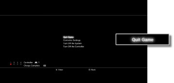

Game > Playing PlayStation®2 / PlayStation® format software > Starting / quitting games
Starting / quitting games
Starting a game
When you insert the disc, the game starts automatically.
Quitting a game
During gameplay, press the PS button on the wireless controller, and then select [Quit Game].

Notice
When you start or quit PlayStation®2 format software, controller number assignments are cleared. Follow the steps below to assign controller numbers.
When starting a game: Press the PS button on the controller when the game is displayed on the screen.
When quitting a game: Press the PS button on the controller when the XMB™ menu is displayed.
Hint
To save data from PlayStation®2 / PlayStation® format software, you must create an internal memory card. For details about internal memory cards, see (Game) > [Playing PlayStation®2 and PlayStation® format software] > [Using saved data] in this guide.
Resetting games
During gameplay, press the PS button on the wireless controller, and then select [Reset Game] from the screen that is displayed. You can only reset a game when playing a PlayStation®2 or PlayStation® format software title.
Notices
- Some PlayStation®2 or PlayStation® format software titles may perform differently on the PS3™ system than they do on PlayStation®2 or PlayStation® systems, or may not perform properly on the PS3™ system.
- Also, PlayStation®2 format software cannot be played on some PS3™ systems. For details, refer to [Types of Playable Discs], visit the SCE Web site for your region or review the documentation that was included with your PS3™ system.